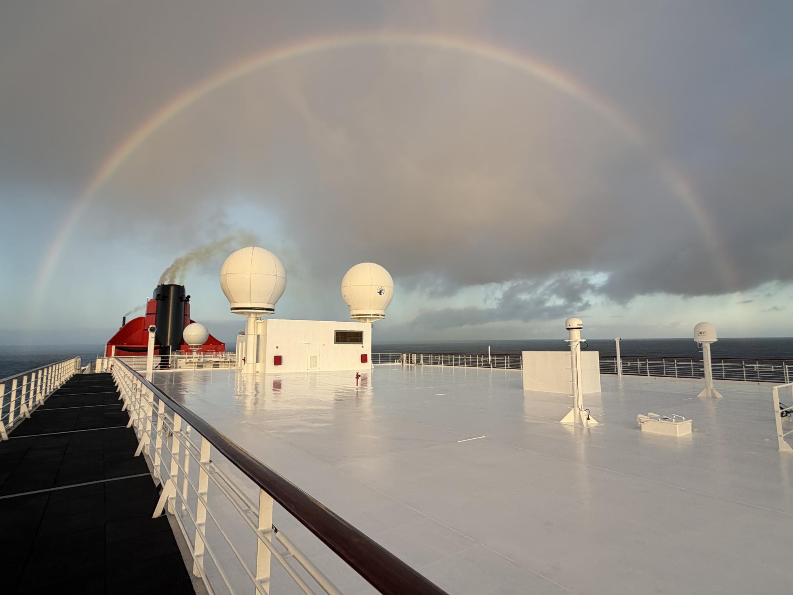
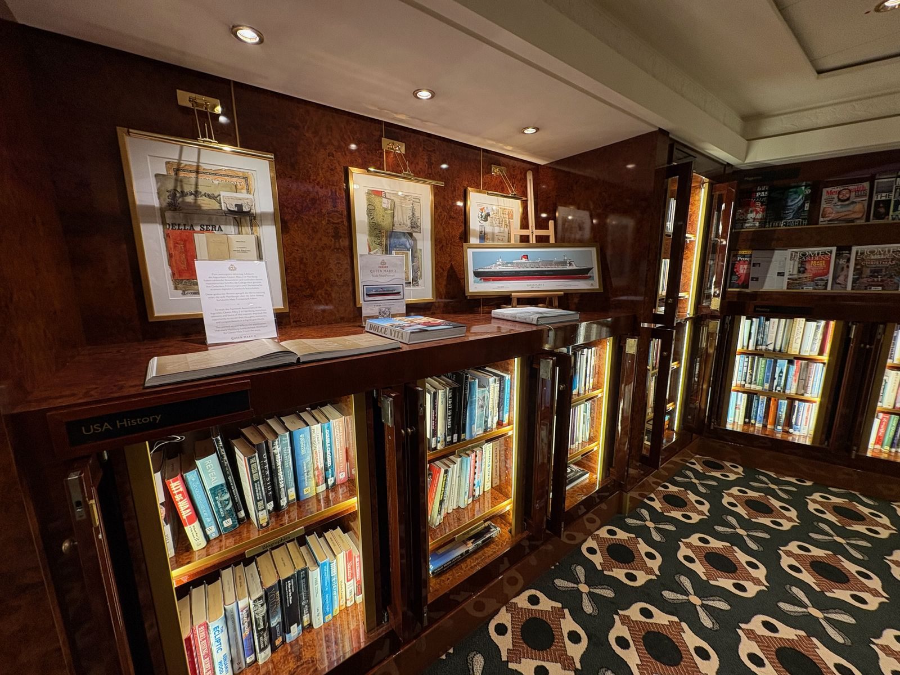

Queen Mary 2
We All Love Heritage Until It Comes for Us
On a ship about to change, and a birthday about to arrive.

I'm a week into an 18-day voyage from New York to Southampton and back, alone in an ocean-view cabin, with the Atlantic doing what it does outside my window. There is room service, which is a civilized way to be lonely. The two facts coexist quite comfortably.
I came aboard the Queen Mary 2 deliberately, to experience her in her current form before she goes into dry dock in Brest, France, this spring. Some open deck space and some beloved rooms will change. I'm not going to inventory the changes. Other people are better suited to drawing deck plans; I'm more interested in why a ship changing makes me feel oddly protective.
An ocean liner built to keep going
The Queen Mary 2 is an anomaly. She is an ocean liner, built for the North Atlantic: heavy, purposeful, made to keep moving when the weather turns.
She isn't a museum piece, though sometimes the affection people have for her can sound like a wish that she were. The ship is still doing the thing she was designed to do: crossing the ocean, on a schedule, carrying people who have chosen the crossing as part of the trip.
That's part of why I'm here. I didn't come for the ports. I wanted the days at sea: the routines, the weather, the odd luxury of having nowhere urgent to be. In other words, I chose a trip with plenty of room to think, and now I have to live with that decision.
Day five, seven in the morning. I'd made myself a rule about walking the outer deck every day, the sort of rule you invent to prove you're in charge of something. Halfway round, the sky over the funnel did the thing rain does when you're willing to stand outside for it: a full rainbow, end to end, nothing in the way. I stopped longer than the rule required. I once wrote an essay about flying 5,000 miles for rain. This time the rain came to me.
The refit is a real, practical event, not a metaphor invented for my convenience. Cunard has announced that the ship will enter dry dock in Brest on March 31, 2027, and return to service on May 9. Part of the work is wear. Part of it is keeping up with how people travel now. And part of it is money, which isn't the villain it's made out to be: a ship that doesn't pay her way doesn't cross.
I'm here before that happens. And while she's in dry dock, I'll turn 60, about a week after she goes in. I can't claim the dates were coordinated. I'm sure the shipyard had other considerations.
We all love heritage until it comes for us
The regulars have their reasons for worrying. People who sail the Queen Mary 2 year after year know where they like to sit, which deck feels quiet, which room has the right atmosphere. They've built a relationship with a place. If some of it changes, it's reasonable to wonder whether the thing you love will still feel like itself.
I understand that attachment. I also know the particular pleasure of finding a quiet corner on a big ship and thinking: there you are. It isn't silly to care about a room, or a stretch of open deck, or the old rhythms of a crossing. Places matter partly because of what we've done in them, and partly because they let us return to a version of ourselves we recognize.
And then there's the less comfortable bit. I look at the calendar and recognize the same resistance in myself.
I've spent most of my working life around change: as a paramedic, physician assistant, consultant, project manager, leadership coach, and now a travel advisor. I've helped people and organizations make their way through transitions. I have, on occasion, used words like "moving forward" without being physically removed from the room.
When change shows up in my own body and my own timeline, I'm not nearly so fluent. I'm five months from 60. The joints make their own quiet observations. The calendar has stopped feeling like an abstract instrument of planning and started acting like it knows me personally.
I've championed change when it belonged to the job, the plan, or someone else's life. When it arrives with my name on it, the first response is less "How can we make this work?" and more "I didn't approve this timeline."
Somewhere around the turnaround
I'm writing this before the ship reaches Southampton, so take the next part on faith or as a prediction. Somewhere around the turnaround, I expect the question shifts. Not into a revelation, exactly; I don't trust a revelation that arrives neatly on schedule. More into a question I can't quite shake: what would it mean for the Queen Mary 2 to stay the same?
The ship I love, or am learning to love, wasn't born from an attempt to preserve everything that came before her. When she entered service in 2004, she took over this very crossing from the QE2, a ship her regulars adored. Everything they love about her now was the new thing then. She was built to carry the ocean-liner tradition into a world that had changed. Her future depends on being a working ship, not an exhibit. Ocean liners that couldn't keep going were scrapped; a few became museums. We admire them, but they aren't crossing the Atlantic every week.
That doesn't mean every change is automatically good. It means the choice isn't always between keeping a thing perfect and ruining it. Sometimes the choice is between adapting and becoming a memory.

I've seen this movie with the regulars, too. We grumble, we adapt, and eventually we tell the story as if we knew all along. The thing we come for, the crossing itself, the time at sea, the familiar rhythm of the days, isn't on any work list.
There's a Gen X version of this thought, somewhere between the VCR and the streaming service: we watched the world move from analog to digital, and developed a healthy suspicion of every claim that the new thing was automatically better. We also learned that the old thing wasn't always coming back. You can be loyal without pretending the tape never tangled.
Getting older may be like that. It isn't a betrayal of who I was. It is, at a minimum, the price of admission for staying in the game. I don't have to like every consequence to accept that I'm still here, changing whether or not I've signed off on the schedule.
If you've got a change of your own waiting somewhere, here's the one thing that's helped. The question that's actually been doing the work for me isn't "what am I losing?" It's "what keeps me in service?" What the change is for, and what it lets me keep doing. A change needs room, and the room doesn't have to be a ship: a quiet week somewhere, a long walk without your phone, an afternoon with a cup of tea and no feed. The room is the point.
Still herself, I think
When this voyage ends, the Queen Mary 2 will keep sailing. This spring she'll go into dry dock in Brest, France, and come out different. I'll turn 60. I'll have a few more miles on my frame, as they say, though I'm not sure the frame approved that language.
I think I'll still be myself. Not the exact self I was at 40, or the one who felt certain that change was something to manage from a comfortable distance. Still myself, in the unglamorous, unfinished sense of it.
I can picture the ship in the cradle at Brest, temporarily held still so she can go back to sea. It's a useful image. Not because I know what it means. Because I don't.
I plan trips with room in them to think. If you have a journey taking shape, tell me about your trip.
Related: Ocean liner vs. cruise ship: what a crossing gives you